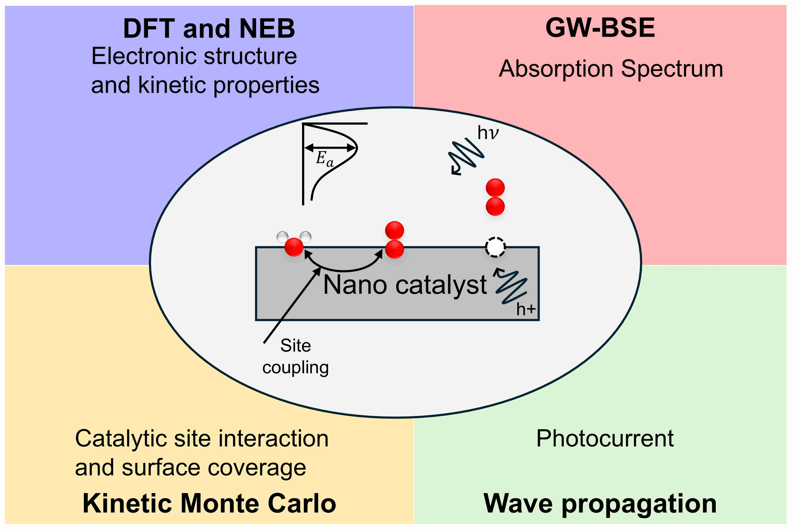
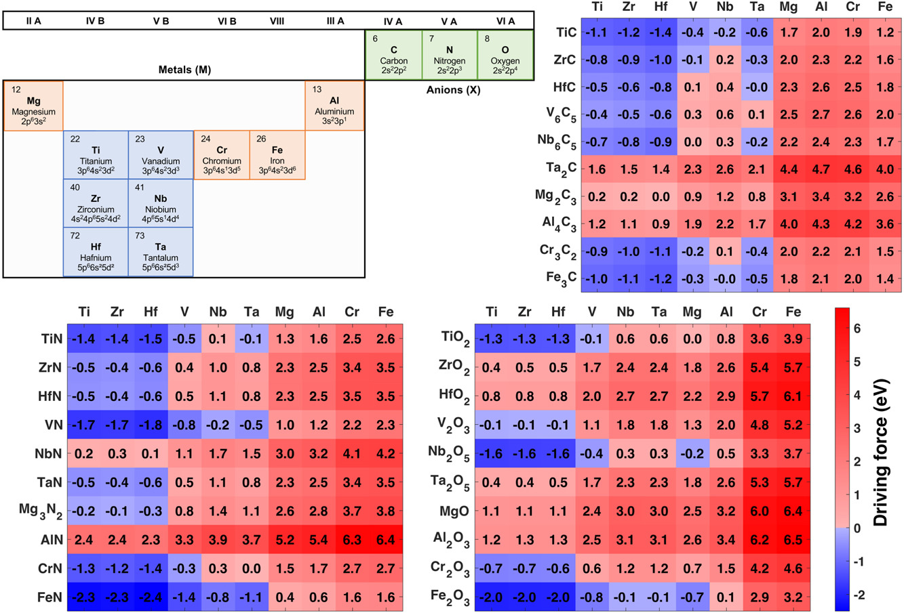

Computational Defect Science at Atomic Scale
1 / 3

Atomically chemically graded Ti-TiN interface (3-D as predicted by first-principles modeling) is thermodynamically stable over a sharp (2-D) interface
2 / 3

Theoretical methods to understand water splitting mechanism
3 / 3

Predicted interface nature (blue squares representing atomically chemically graded interface and red squares atomically sharp) in 300 metal/ceramic systems
❮
❯

Dr. Prince Gollapalli, Postdoc
Computational Materials Lab
Dept. of Materials Science and Engineering
Technion - Israel Institute of Tehnology
email: prince.gollapalli@gmail.com
About
Interests: First-principles atomistic modeling, Materials for renewable energy technologies,
Interface chemistry, Phase stability, Defect thermodynamics, Materials informatics.
Dr. Prince Gollapalli is a metallurgical and materials engineer by training.
He received B.Tech, M.E, and Ph.D degrees in metallurgical and/or materials engineering from
NIT Warangal, IISc Bangalore, and IIT Madras, respectively. He believes that breakthroughs in several technologies can be achieved
by engineering the defects at an atomic level, be it vacancies, dopants, interfaces, surfaces. Some defects enhance the properties while some deteriorate the properties.
At a fundamental level when we look at a crystalline material as a set of atoms (electrons and nucleus) arranged periodically,
defects alter electron-electron, electron-nucleus, and nucleus-nucleus interactions.
Thus, I am dedicated to study the science of defect interaction at an electronic structure level using the state-of-the-art first principles calculations based on density functional theory
to obtain fundamental insights into structure-property correlation. Such insights help address challenges in rationally designing materials with anticipated properties
in technolgies such as green hydrogen generation, semiconductor technology involving atomic scale interaction.
As a postdoctoral fellow at Technion - Israel Institute of Technology, he is designing catalysts to generate green hydrogen by water splitting, electrolyte materials for fuel cells and understanding oxide-oxide interface for CO2 reduction. As a visiting scholar to Purdue University during his Ph.D.,
he worked on integrating machine learning into first-principles calculations to accelerate the defect prediction in semiconductors. For his Ph.D., he provided insights into the fundamental nature of interface between metals and ceramics.
The interface between a metal and a ceramic is assumed to be atomically sharp, thus two-dimensional,
because exchange of atoms across the interface is not favorable. First-principles modeling helped predict
a third dimension at the Ti/TiN (metal/ceramic) interface which forms by stoichiometric phases of Ti-N,
within a few nm, with continually varying mechanical properties across the interface.
He also studied a range of technologically and scientifically important metal/ceramic systems,
where their nano-heterostructures find applications in turbine blades, biological implants, and
various components of cell phones.
Experience
- Postdoc in Materials Science and Engineering, Technion - Israel Institute of Technology (March 2023-present).
- Visiting Scholar in School of Materials Engineering, Purdue University, US (Jul-Nov, 2022).
Education
- Ph.D. in Metallurgical and Materials Engineering, Indian Institute of Technology Madras (2017-23).
- M.E. in Materials Engineering, Indian Institute of Science Bangalore (2015-17).
- B.Tech in Metallurgical and Materials Engineering, National Institute of Technology Warangal (2010-14).
Good News
- June 13, 2023: My Ph.D. work was featured in IIT Madras Tech talk, "A 3rd dimension at Metal/Ceramic Interface"
[Link]
Contact
E-mail: prince.gollapalli@gmail.com
Copyright © 2023 Prince Gollapalli